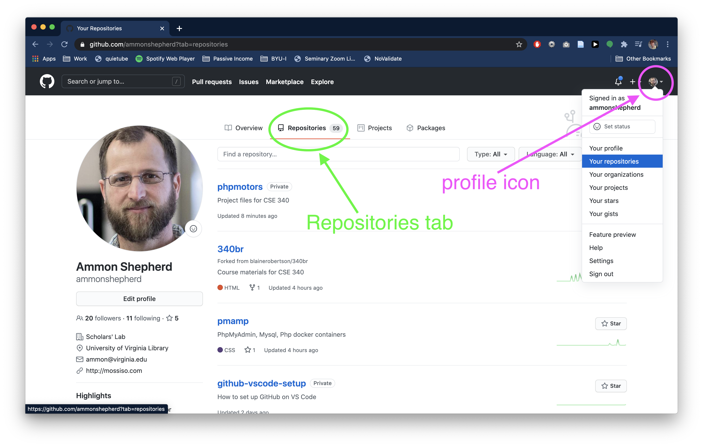
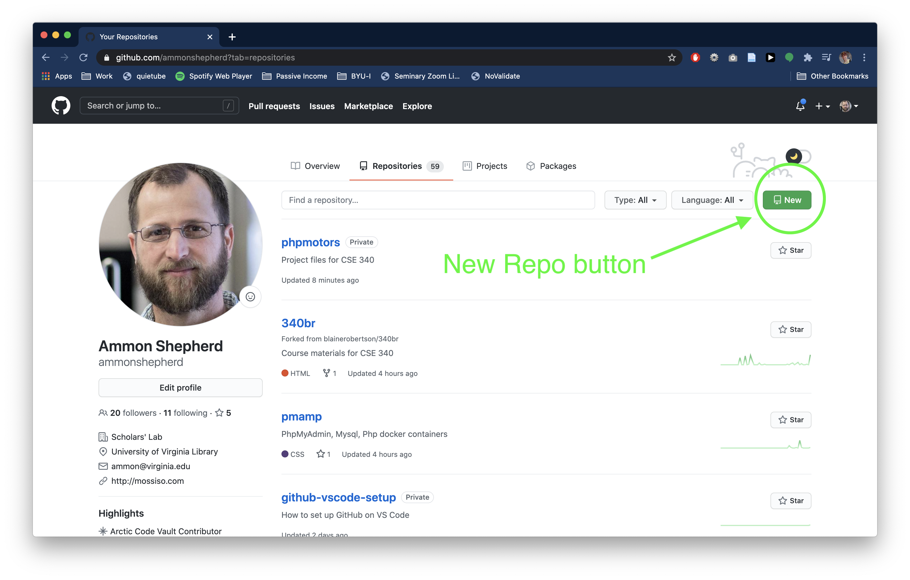
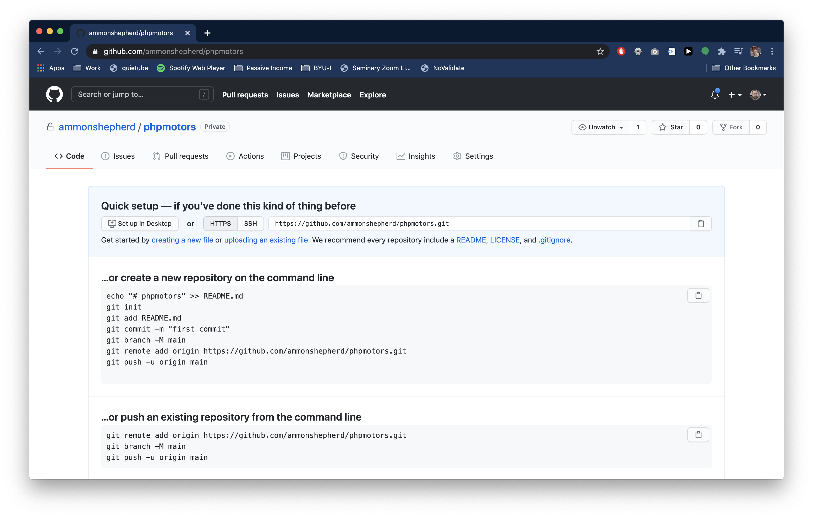
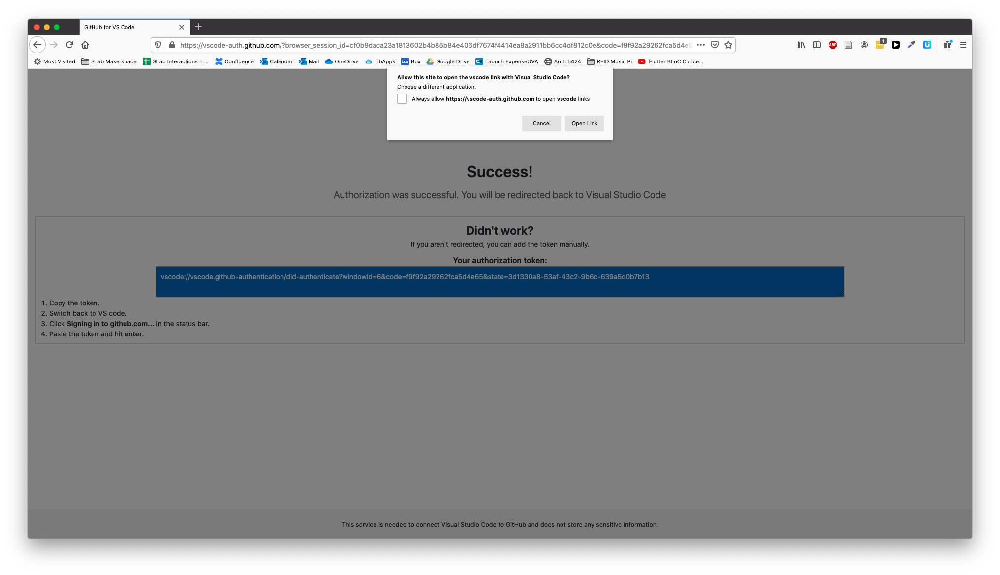
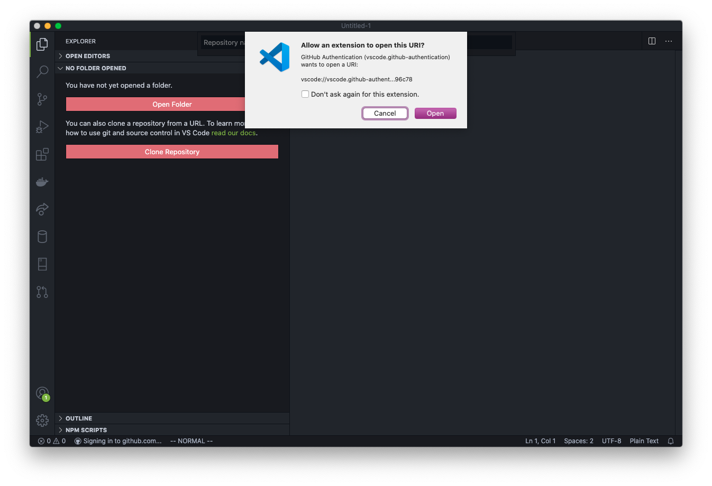
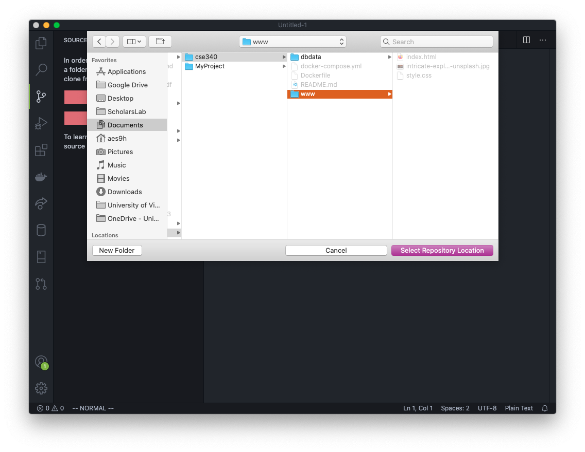
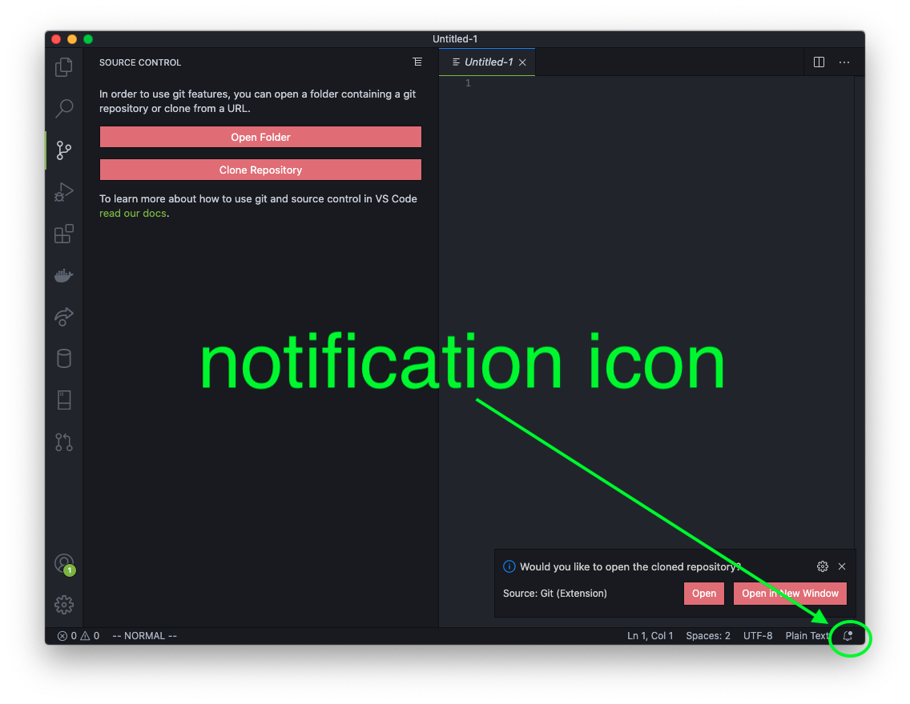
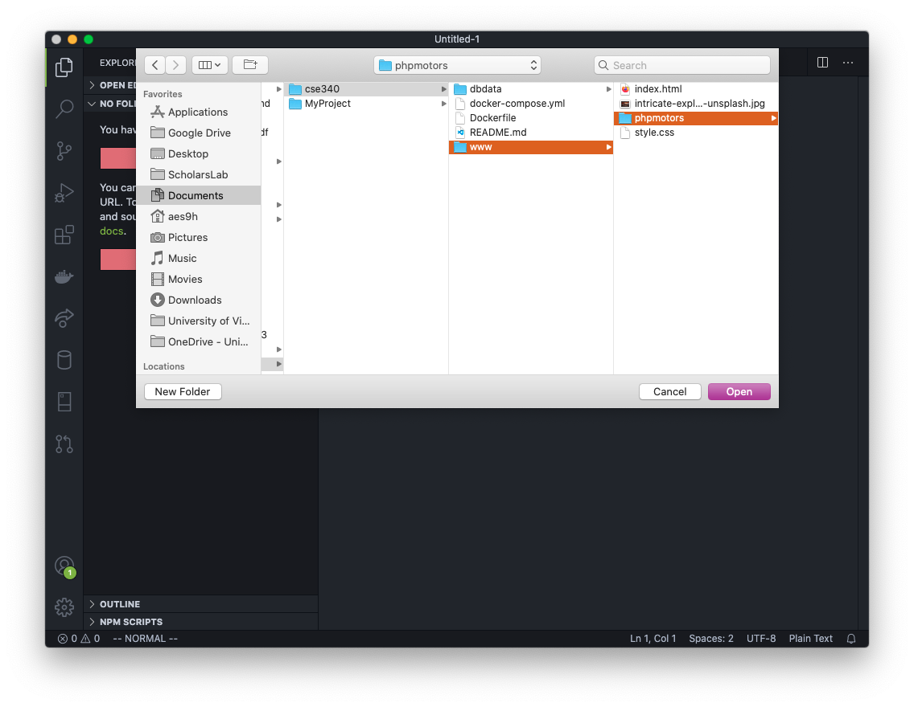
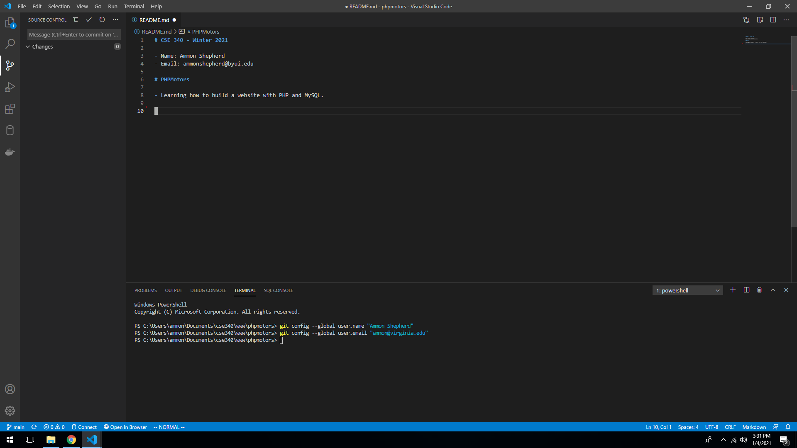
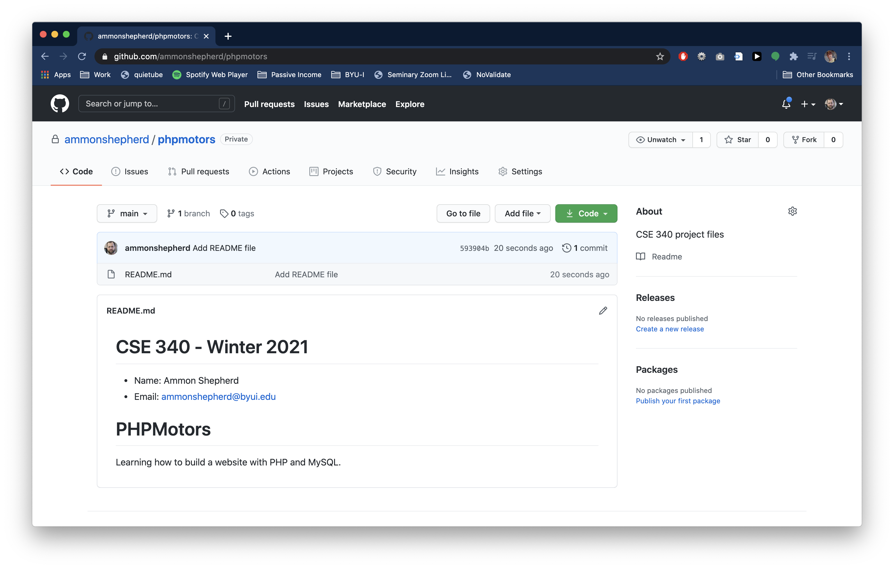

GitHub and VS Code
This tutorial will guide you through connecting VS Code to your GitHub account.
GitHub is an online service that hosts your Git repositories. It can also provide a social aspect to your code. It is used by pretty much all major software companies. GitHub is not the only service out there, but it is the most well known.
Using GitHub adds one more step to the normal Git workflow:
- Make changes to your code (edit, add or delete files and folders)
- Stage the files and folders you want to commit
- Commit the changes
- Push the commit to GitHub
Create an account
The first step is to create an account at GitHub.com.

- Visit https://github.com in a browser.
- Click the Sign up button.
- Fill in the required fields for a unique username, email and password. You can uncheck the spam box – er, I mean Email preferences checkbox.
- Complete the "puzzle" by clicking the Verify button, then selecting the right images.
- Finally, click the big blue Create account button.
Create a repo
The next step is to create a new repository. A repository is the folder that holds the code. In our case, this is where we will put the code for building the website.
[The video shows the steps detailed below. There is no audio, yet.]
On the GitHub website, after you have logged in,
- Click on your profile icon on the top right of the page.
- Click the Your repositories link, then click the green New button.
- Alternatively, if you are on the profile page already, click the Repositories tab, then click the green New button.

- On the New repository page, name the repository
phpmotors. - Fill in a description if you like.
- Check the "Private" option. Leave the remaining checkboxes empty.
- Click the green Create repository button.

You are now taken to the repository page for the repository you just created. Do not browse away from this page yet, as we will need a URL from this page later.
GitHub and VS Code
Open VS Code. You should have done some initial setting up of VS Code already. The ability to use Git is built into VS Code. There is no plug-in or extension needed to use VS Code with Git or with GitHub.
Set up remote Git repo
The first step is to open a new VS Code window with File->New Window. You can close the other VS Code window. It will not be needed anymore.
Notice the Git icon on the left sidebar. Click on that.

You should see two pink colored buttons; one for Open Folder and one for Clone Repository. Click on the Clone Repository button. This opens the VS Code Command Prompt.

Click on the dropdown option Clone from GitHub.

A pop-up will ask if you want to allow the extension to sign in to GitHub. Click the Allow button.

Your browser will then open with a page asking you to continue authorization of VS Code to access GitHub. Click the big green Continue button.

You'll see a success message with an alert box. Click the Open Link button.

This sends you back to VS Code with a prompt to allow the extension to open the URI (the address). Click Open.

After a second, you will see a drop down with all the repos in your GitHub account available.
If the repos are not showing as options, then make sure you have authorized VS Code to access GitHub as done above.
Pick the repo you just created.

If the repo does not show up, you can type in your GitHub account name followed by the repo name: username/repo-name Click on that option.

Next, VS Code will ask you to select a location on your computer to put the files. Browse to your project folder, for example Documents/cool-website/.
Now select the folder and click the Select Repository Location button.

Next click the Open or Open in New Window button on the VS Code notification pop-up. If the notification disappeared before you could click on it, you can click the little bell icon to get the notification to reappear.

Or you can click on the Open Folder button and browse to the folder you selected before and select that folder. This is the process for opening this folder from this point on if the VS Code application is closed.

Now VS Code is connected to the GitHub repo and we can start adding files in VS Code.
Git Workflow
Now is a good time to remind you of the workflow you will be using as you create your website.
Normally, when working with a version control software, you want to work on small discrete chunks of code. After each feature or chunk is complete, you submit that to the version control software as a commit.
Simply stated, the workflow is:
- Work on one aspect of the website
- Stage and then commit the changes
- Work on another aspect of the website
- Stage and then commit the changes
- Push the changes to your GitHub repo when done making changes
We'll walk through that process by adding a helpful file, called a README file that is used to explain what the repo is all about.
The README file
Back in VS Code, make a new file by clicking on the new file icon, or go to the File menu and click New File. Name the file README.md The .md is the file extension for Markdown files. GitHub will know what to do with it.

We'll use Markdown in this file, which is like a distant cousin to HTML. It makes text readable as plain text, but still has some syntax that allows computers to alter the display of the text, just like HTML.
To learn more about the Markdown language, see here: https://guides.github.com/features/mastering-markdown/
In this new file type in:
# CSE 340 – Winter 2021
- Name: Your Name Here
- email: yourname@email.com
# PHPMotors
- Learning how to build a website with PHP and MySQL.Save the file.
Now once you save the file, you should notice some things with Git icon on the left side menu. The Git icon now has a number, signifying that it now recognizes that one file has been changed.

If you click on the Git icon, a sidebar opens to display Git info. In this panel, you can stage the changes for a commit, add a message, commit the changes, and even push them to the GitHub repo.

Before we can make a Git commit, Git needs a name and email to associate with the commit. This will set the name and email in Git's global settings, so you only need to do this once. To do this, open the Terminal in VS Code (Terminal->New Terminal or View->Appearance->Show Panel).
Type in the following command (but use your name) and hit Enter on the keyboard
git config --global user.name "FIRSTNAME LASTNAME"
Type in the following command (but use your email address) and hit Enter on the keyboard
git config --global user.email "youremail@email.com"

Stage the changes for a commit by pressing the plus icon.
To commit the changes, first type in a short message, then click the check mark or use the short-cut keys (command-Enter on Mac, Ctrl-Enter on Windows).
Once you have committed the changes, you can push the changes to the GitHub repo. Click on the three-dots icon and select Push.

You may be asked if you wish to periodically fetch new changes from GitHub. You don't want this, so select "No".
If you go to the GitHub website in your browser and refresh the page, you should see the README.md file is now listed as a file, and the contents are displayed below.

Note: If you discard the changes (the bent arrow icon), then all the changes you made to the file will be lost and the file will change back to how it was before you 'staged' it for the commit.
This folder (the phpmotors folder inside the www folder) is where you will put your code as you work on the weekly Activities and Assignments. You will follow this process each week of adding and editing files, staging, committing, and pushing.
- Work on the Activity
- Stage and then commit the changes
- Work on the Assignment
- Stage and then commit the changes
- Push the commits to your GitHub repo
All set
You are now all set up with a GitHub repository and your VS Code app is now connected to the repo.
As a reminder, the workflow for the course will be:
- Work on the Activity
- Stage and then commit the changes
- Work on the Assignment/Enhancement
- Stage and then commit the changes
- Push the changes to your GitHub repo
Troubleshooting Tips
- Error: If you try to clone the repository, but it fails to create the
phpmotorsfolder... -
Fix: Try to clone the GitHub repo from the VS Code Terminal. Open VS Code and open the /Documents/cse340/www/ folder. Open the Terminal (Terminal -> New Terminal), and type in
git clone https://github.com/YOUR_USER_NAME_HERE/phpmotors.git phpmotorsIf you get an error like this:
remote: Repository not found. fatal: repository 'https://github.com/MyRepo/project.git/' not foundThen type ingit credential-manager uninstallfollowed by
git credential-manager installThen re-run the git clone command above.